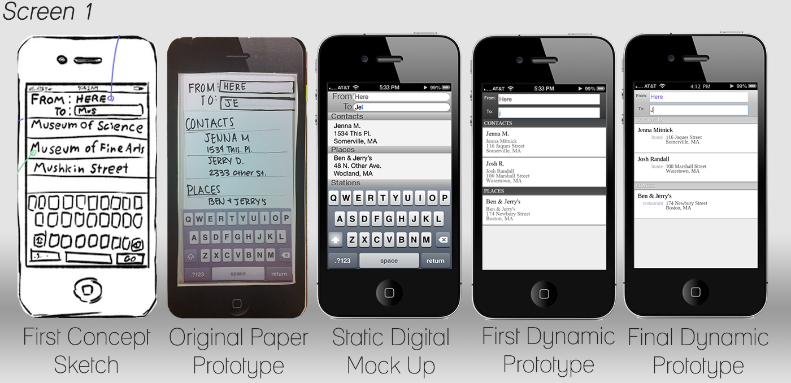
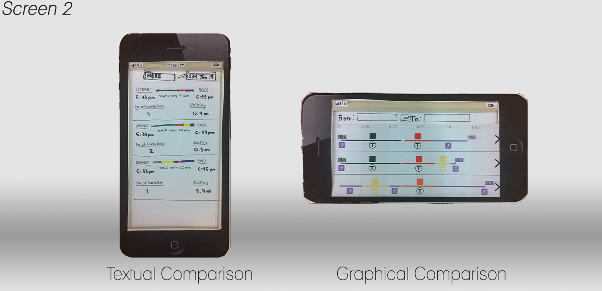
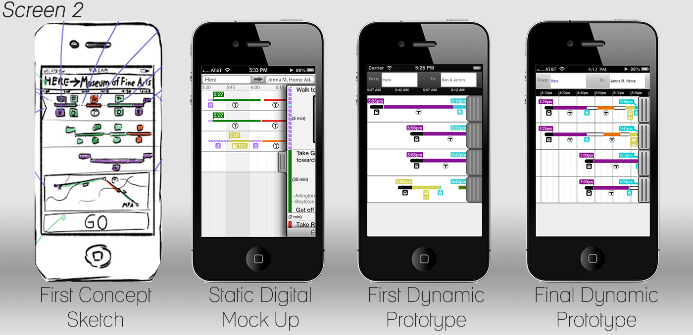
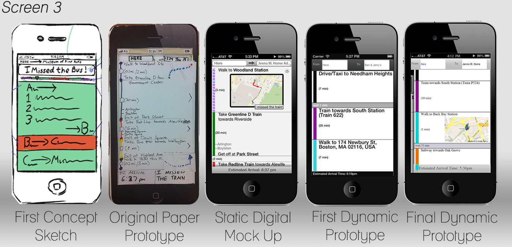
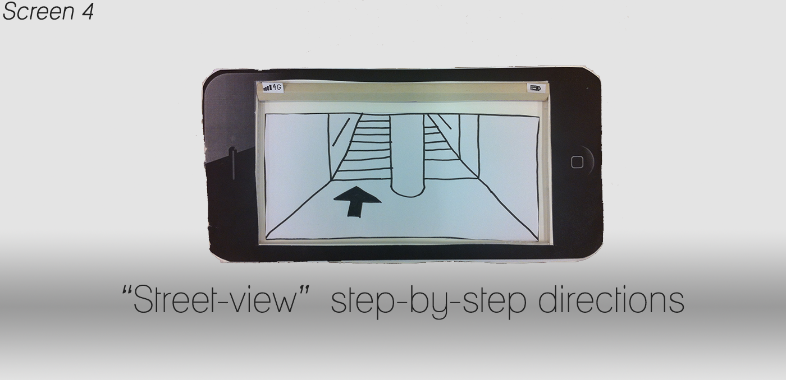

Changes
Our overall vision of the product did not substantially change over the course of the semester, but our understanding of how the design would function was constantly challenged by our testers and evaluators. As such, there are many details that had to be exhaustively thought through and developed to create the prototype you see now. Given that our design has only three screens, we feel a screen-by-screen description is the best way of documenting the changes.
Screen 1

The manner in which users input start and end points in screen 1 has changed very little throughout the project. The major change between the various iterations has been in how data is displayed. This included categorizing information into contacts, places, station names, etc. and making sure the presentation of information was consistent the format used in other iOS applications.
Screen 2

The single largest change in our design process occurred in deciding how we could best display route information to help users select their optimal route. We prototyped a text-heavy design that displayed important details about each route, such as walking distance, the number of connections, and how often each route would repeat. We also prototyped a graphical view that did not explicitly list this data, but did a better job of comparing the different routes.
We believed that the additional information in the textual view would allow users to make a more informed decision and therefore be more confident in their interaction. However, testing showed that whilst the textual view presents more detailed information, the format of that information is not precisely what our users are looking for. For example, our users were less interested in precisely how far they had to walk and more interested in how much time it would take them. Also, the number of connections was not as important as knowing what type of connections, e.g. train-to-train or train-to-bus.
Overall, it was easier to explicitly see information about routes in the textual view, but our users preferred the graphical view for its ease of comparison and reduced need for information processing. In other words, it was easier to compare the lengths of lines side by side than to interpret a large set of numbers.

Whilst it became clear that a graphical comparison was the optimal way of helping users compare and select routes, there were still many unanswered questions about how they would actually interact with the data on this screen.
Visibility
Our biggest concern in implementing the graphical comparison was displaying everything effectively in portrait mode. Landscape mode is the more obvious orientation for this sort of design, but portrait mode is how smartphones are used the majority of the time. We discussed the possibility of forced screen-rotation or even displaying the textual-view in portrait and the graphical-view in landscape. However, we decided that adapting the view for portrait mode was an acceptable challenge to try and tackle.
As such, much thought into what information was necessary and how it could be best displayed. For example, users expressed some confusion about what time flags were only displayed at the start of the first public transit segment and at the end of the entire journey. This is because they are the two most important times in making a decision: the first time tells the user when they must be at a station and the last time informs the user as to when they will arrive at their destination. All other times are relevant only if that route has been selected.
Ensuring that the colors and iconography of the graphical view were consistent with those used by the MBTA was paramount. This was easy for the public transit lines, but considerably more difficult for driving, walking, and waiting, since these are not modes with an MBTA-established convention. Luckily, once we began digital implementations, it became clear that there was sufficient room to make the route segments and icons quite large.
The greatest difficulty in developing the graphics was representing wait time. In our earliest sketches, the time a user had to wait between public transit segments was represented by empty space. That is, the absence of a transportation method. However, once we began using the Google Maps API, certain routes contained such large waiting periods that users thought they were looking at the end of one route and beginning of a separate route. Several options were discussed, but ultimately this was more of a graphic design question than anything else. We implemented a thin stroke around the entire route to make it clear all segments belonged to a single route. The possibility of creating an icon or adding a text description was also discussed, but spacing and overlap became a major issue (see "Future Work")
Navigation
We anticipated that the greatest problem we would face in the graphical comparison view would be fitting all the graphical information into such a small display. However, the greatest difficulty our users faced was actually selecting a route and navigating to the detailed directions page. The original concept sketch shows that users would tap on a route, summoning a small display overlapping the route onto a map and a "Go!" button. We felt that there was insufficient room to display a map, as well as the fact that a map would not have helped our personas choose a route.
We challenged ourselves to create a mental model that did not rely on obvious navigational buttons (e.g. "next" or "back"). In paper prototyping, our users generally assumed that simply tapping on a route would take them to the next screen. Initially we resisted this since the display was pannable and we were worried about the possibility of accidental route selection. However, this interaction was so prevalent that if we were to implement a multi-touch prototype, tapping on a route would be possible to see detailed directions.
But given that our dynamic prototype was not multitouch, we needed to develop a touch target for our users. These buttons originally featured arrows or other icons suggesting direction, but our users assumed that these were related to display more of the route, not take them to a whole new page. Thus there was a serious question about the mental model of our application. Conducting a cognitive walkthrough with other class members was instrumental in helping us refine our understanding of this mental model.
The graphical view is a large canvas, only a small portion of which is displayed at any one time. This canvas is pannable in all directions to see more routes. If we liken this canvas to a large map, the detailed directions page is a separate page that the user can drag on top of the map. Drag. This physical analogy suggested the possibility of using swipe gestures to navigate between the two pages. This would establish a firm relationship between screens 2 and 3, that they both display the same information, but at different levels of detail.
Suggesting that users should swipe on the screen proved to be a difficult challenge. The current implementation uses tabs with an embossed pattern that suggests it has a physical quality to it, one that a user might want to drag. This convention is already used extensively throughout iOS, but primarily in vertical swiping applications, not horizontal. Another problem was that users would often tap on the tabs, not swipe. We used a sliding transition, but users assumed this was simply an animation, not a suggestion about the mental model of the design. Ultimately, we ended up using another iOS convention: tapping on the tabs does not let the user navigate to the next screen, but causes the tab to bounce. This proved very effective at compelling users to use a swiping motion, even when using a mouse and keyboard, not a touch screen.
Screen 3

The content of the detailed directions view in screen 3 remained largely unchanged throughout the project, but the presentation and arrangement of that content has gone through several iterations.
Simplicity
One of the primary problems we identified in existing applications is information overload - they provide more information than is actually necessary for users to complete their tasks. Thus, we wanted to ensure that only relevant information is displayed when it is appropriate. This didn't necessarily mean presenting less information, rather that all information presented served a purpose.
The original concept scaled each step by duration - shorter segments used less screen space as larger segments. However, it soon became apparent that for journeys that could not be displayed on a single screen without scrolling lost the benefit of this scaling, since not all steps could be compared simultaneously. On the plus side, this gave us more space for each step and allowed us to ensure that the information was as clear and legible as possible.
Consistency
Our heuristic evaluators pointed out that whilst the Estimated Arrival Time display at the bottom of the screen was useful, it lacked visual consistency with the arrival time flag in the graphical comparison. Thus, we made sure that part of the final line segment was displayed on the ETA bar.
Originally, these line segments were displayed at the top of the screen in a horizontal fashion similar to the graphical comparison screen. However, the line segments and text directions were disconnected, decreasing the utility of displaying the line segments at all. We changed these into a vertical display that aligned with the text directions. This not only increased consistency within the screen, but also helped guide users through the list of directions.
Also, our heuristic evaluators expressed severe confusion about how to return to the previous screen. As mentioned earlier, our mental model was designed to teach the user that swiping on the screen would return them to the previous page. However, this interaction was not obvious, so it was necessary to create a touch target. Rather than creating a whole new tab or button, we simply stopped the screen from sliding all the way over - this left some of the tab and graphical comparison screen visible. Not only was this a touch target, but a clear indication of what would happen when the user swiped.
Mental Mapping
The biggest change in this screen involves the placement of the "I missed the train" button. It was originally located at the bottom of the screen, but in initial testing many users thought this was a status display or error message. To address this, we made sure that future prototypes made it as "button-like" as possible, in addition to moving the button to appropriate steps. It did not make sense to our users that they could say "I missed the train" when they are in the final walking direction of their journey.
Despite moving the button to appropriate steps, there was still confusion about when it should be pressed or what would happen when it was pressed. The problem seems to stem from the fact that inexperienced users of the MBTA do not plan or progress through their journey expecting an error or delay. Therefore, they do not expect to see a button or feature that would address such a problem. We feel that the best way to deal with this would be to make the button dynamic, i.e. not only will it appear only in relevant steps, but also only at relevant times, such as when a user is within a few minutes of making a transfer or if they have been waiting a station longer than expected.
Screen 4

During our ideation, we explored the possibility of a "street-view" style of directions. Rather than simply giving plain text to users, perhaps it would be possible to show them a picture of where they ought to go. Users quickly poked holes in this idea by pointing out that the world can look very different depending on which of the train you exit and that spinning around trying to line up a picture with their surroundings felt no easier or more comforting than simply looking for a sign. Thus, this feature was removed after initial testing.

{kind=link}